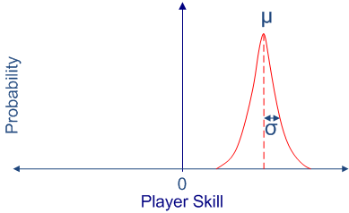

Gamepolis 2013
Game Analitics
Moritz Wundke - Lead Programmer Tragnarion Studios
Game Analitics
- Introducción
- Definiciones
- Análisis de datos
- Do it yourself
Introducción
- La indústria de los videojuegos esta creciendo a ritmos que nunca se han visto.
- Más de 60 mil millones de US$ en 2011 y unos 80 mil millones en 2012 según Colin Sebastian (RW Baird)
- Las inversiones aumentan y por lo tanto el riesgo
- Jugadores más exigentes
Dominios
Podemos clasificar las necidades de análisis de un juego en tres puntos de vista differentes:
Punto de vista de PRODUCTO
Punto de vista de PROYECTO
Punto de vista de RENDIMIENTO
Dominios
PRODUCTO
Una vez que tengamos un producto tenemos que conocer su estado durante su cíclo de vida.
- ¿El producto funciona?
- ¿La experiencia de usario (UX) es la esperada?
- ¿El contenido descargable tiene impacto?
- ¿Dóndo fallamos?
Dominios
PROYECTO
Durante el desarollo del proyecto es muy importante saber que hacemos mal y también que hacemos bien.
- ¿El juego es balanceado?
- ¿Conseguiremos la duración deseasda?
- ¿El diseño de los niveles se ajusta a lo esperado?
Dominios
RENDIMIENTO
Desde el punto de vista del rendimiento nos concentramos en la estabilidad y los aspectos técnicos del juego.
- ¿Es estable?
- ¿El rendimiento es acceptable?
- ¿Dónde y porqué falla el rendimiento?
¿Sistema propio?
El eterno dilema XD. Vamos a ver un poco en detallo los pros y los cons de hacer nuestro propio sistema.
También es posible usar un sistema comercial ya existente. Tales como:
¿Sistema propio?
Pero bueno, ¿aquí no estabamos para hacerlo nosotros mismos? Pues sí :D Así que vamos a ver los pros y los contras de un systema propio.
PROS
- A nuestro gusto y necesidades
- Acceso directo a los datos
- Son tu datos, puedes usar las herramientas y métodos que quieras
- La verdad es que mola hacerlo!
¿Sistema propio?
Todo tiene su lado malo, en este caso vamos a llamarlo oscuro ya que tampoco es para tanto XD.
CONS
- Recursos humanos especializados!
- No es 'Plug'n Play'
- Inversión inicial más elevada.
Definiciones
Cuando creamos un sistema de análisis tenemos que tener conocer las cuatro definiciones básicas:
- Analítica
- Telemetría
- Métrica
- Monetización
Analítica
El proceso de descubrir y comunicar patrones en los datos que nos ayuden resolver problemas de negocio.
- Dar soporte a las deciciones de negocio
- Conducir la toma de decisiones
- Mejorar el conocimiento que tengamos del proyecti/producto
Telemetría
El proceso de captura de datos en un sistema y el posterior envio hacia otro.
- Los datos en formato RAW sin procesar vamos
- Describe en detalla a acciones, eventos, objectos, etc...
- Proviene de multitud de fuentes: tests, clientes, servidores, etc...
Métrica
En matemáticas se define la métrica como la distancia entre elementos en un espacio. En nuestro caso sería una medida quantitativa e interpretable de los atributos de uno o más objectos en un contexto conocido.
- Contexto, por ejemplo, usarios del juego, rendimiento, etc..
- Objetos como items, jugadores, usarios, etc...
- Atributos de cada objecto, por ejemplo, el número de items de un jugador, etc...
Monetización
La monetización es el proceso de convertir un producto en dinero. En el caso de los juegos es un pilar sumamente importante.
- Clicks vs beneficios
- Cuantás descargas generamos
- El impacto de la publicidad, negativo y positivo
Análisi de datos
- Normalización y estanderización
- Recomendadores y agrupamiento
- Extracción y seleción de datos
- Clasificación
Normalización
La normalización de datos el proceso de procesar los datos RAW a algo que este dentro de nuestro rango de conocimiento.
- Clampear valores
- Valores corruptos o ausentes
Normalización
Valores corruptos o ausentes
Cuando detectamos valores corruptos o ausentes tenemos que tomar ciertas medidas. Melissa Humphries de la universidad de Texas nos proporciona un buen estudio sobre ello.
Normalización
Pair wise deletion
Simplemente eliminamos los datos inválidos.
-
Ventajas
- Mantenemos todos los datos posibles
- El análisis tendrá toda la información disponible
-
Desventajas
- El análisis no es comparable con otros
- Incluso la comparación entre atributos puede verse afectada
Normalización
Pair wise deletion
Ejemplo:

Normalización
List wise deletion
La eliminación en lista consiste en eliminar la fila entera si almenos un atributo de ella es considerado inválido.
-
Ventajas
- Muy simple
- Comparable entre differentes análisis
-
Desventajas
- Pierde validez estadística
- No usa toda la información disponible
- Estimaciones pueden ser sesgadas por la pérdida de datos
Normalización
List wise deletion
Ejemplo:

Normalización
Substitución por la media o la moda
Reemplazamos valores inválidos de la columna de atributos por la moda o la media.
from collections import Counter
def mode_missing(l):
"""
Substitude missing values '?' using the mode of the set
"""
cl = Counter([l[i] for i in range(len(l)) if (l[i] != '?')])
moda = float(cl.most_common()[0][0])
return list(map(lambda x: moda if x=='?' else float(x), l))
from numpy import average
def mean_missing(l):
"""
Substitude missing values '?' using the mean of the set
"""
mean = average([l[i] for i in range(len(l)) if (l[i] != '?')])
return list(map(lambda x: mean if x=='?' else float(x), l))
Estandarización
Cuando analizamos differentes datos a menudo intentamos comparar peras con manzanas, o almenos encontrar una relación entre sus atributos.
Con una matríz de atributos ajustaremos cada columna para que puedan ser comparable entre ellas.
from numpy import average, std
def standardize_matrix(m):
"""
Standardize each colum of the matrix 'm'
"""
averages = list(map(average, m))
stds = list(map(std, m))
return [list(map(lambda x: x if stds[i] == 0.0 else
(x - averages[i]) / stds[i], m[i]))
for i in range(len(m))]
Recomendadores y agrupamiento
Los recomendadores intentan proporcionar una recomendación fiable para un usario. En un análisis lo podemos ver como una predicción de usario que nos puede indicar mucha información útil.
Los agrupadores intentan crear grupos de elementos pero respetándo cierta similitud entre los elementos de cada grupo.
En ambos casos es necesario definir esa similitud entre elementos. Los métodos de similitud más comunes son la distancia euclideana y el coeficiente de Pearson.
Recomendadores y agrupamiento
Distancia euclidiana
EXPLIACR! 1 / 1 + eucli porque asi nos evitamos divisiones por 0
Recomendadores y agrupamiento
Distancia euclidiana
def euclidean_dist(dic1, dic2):
"""Compute the sum of squares of the elements common
to both dictionaries"""
return sqrt(sum([pow(dic1[elem]-dic2[elem], 2)
for elem in dic1 if elem in dic2]))
def euclidean_similarity(dic1, dic2):
"""Calculate the euclidean similarity."""
return 1/(1+euclidean_dist(dic1, dic2))
Recomendadores y agrupamiento
Coeficiente de Pearson
EXPLIACR!
Recomendadores y agrupamiento
Coeficiente de Pearson
def pearson_coeff(dic1, dic2):
"""Retrieve the elements common to both dictionaries"""
commons = [x for x in dic1 if x in dic2]
nCommons = float(len(commons))
# If there are no common elements, return zero; otherwise
# compute the coefficient
if nCommons==0:
return 0
# Compute the means of each dictionary
mean1 = sum([dic1[x] for x in commons])/nCommons
mean2 = sum([dic2[x] for x in commons])/nCommons
# Compute numerator and denominator
num = sum([(dic1[x]-mean1)*(dic2[x]-mean2) for x in commons])
den1 = sqrt(sum([pow(dic1[x]-mean1, 2) for x in commons]))
den2 = sqrt(sum([pow(dic2[x]-mean2, 2) for x in commons]))
den = den1*den2
# Compute the coefficient if possible or return zero
if den==0:
return 0
return num/den
Recomendadores y agrupamiento
Ponderado
Recomendadores y agrupamiento
k-means
Extracción y seleción de datos
Que es? datos = input + ruido Cómo quitar el ruido?
Extracción y seleción de datos
PCA
Que es? datos = input + ruido Cómo quitar el ruido?
Extracción y seleción de datos
LDA
Que es? datos = input + ruido Cómo quitar el ruido?
Extracción y seleción de datos
MDS
Que es? datos = input + ruido Cómo quitar el ruido?
Clasificación
Que es? datos = input + ruido Cómo quitar el ruido?
Clasificación
kNN
Que es? datos = input + ruido Cómo quitar el ruido?
Clasificación
Clasificador lineal basado en distancias
Que es? datos = input + ruido Cómo quitar el ruido?
Clasificación
Medir la clasificación
- Matriz de confusión
- Error
- Exactitud
- Precisión
- Sensibilidad
- F1
- Especificado
Clasificación
Test estadístico
Es la diferenia estadística de los datos classificao significativa?
- Student
- McNemar
Do it yourself
- GA System
- La API
- Casos de uso
GA System
El sistema que proponenmos es bastante sencillo de implementar. Hablar sobre Node.js y MongoDB
GA System
La API
Explicar la idea de las sessiones. Tipos de evento. Como son las llamadas. Y un ejemplo de applicación de API en cliente.
Casos de uso
Progresión de niveles
Estamos trabajándo en un pequeño juego para plataformas móviles para el cual hemos implementatdo el sistema que os acabo de presentar.
Los diseñadores de niveles han de tener claro como crear cada parte y necesitan datos detallados de como se comporta el jugador.
Como ejemplo os presento los datos recogidos de más de 200 partidas jugadas. Para hacerlos una idea esas 200 partidas nos han generado más de 20.000 eventos.
Casos de uso
Progresión de niveles
En qué nivel muere un jugador y más importante en que parte del nivel ha estado. En el ejemplo tenemos dos differentes gráficos, el plot de donde muere la gente y el plot por nivel que nos indica en cada nivel cuándo ha muerto.
Casos de uso
Progresión de niveles
Meter imagen del plot de muertes
Casos de uso
Progresión de niveles
Otro elemento importante es saber en cada nivel que ha pasado. Datos acomulados nos proporcionan mucha información al respecto: Balas usadas, recargas realizadas, pickups encontrados, vida perdida, etc...
El siguiente ejemplo nos compara los pickups encontrados en una linea con la vida que ha perdido un jugador. Nos es muy útil para saber si el numero de pickups es correcto o no.
Casos de uso
Progresión de niveles
Meter imagen del plot de muertes vs health perdido
Casos de uso
Tracking de movimiento
Otro ejemplo muy útil es conocer el movimiento de los jugadores. El sistema de análisis DNA usado en la serie Assassin's Creed se inspira en Google Maps para representar movimientos de los jugadores
Saber por dónde pasan los jugadores o incluso la IA nos indica muchas veces fallos en el diseño graves y muy difíciles de depurar en un estado tardío del desarollo.
Casos de uso
Heatmaps
Los heatmaps son otra visaulización fundamental de cualquier análisis, no sólo para juegos. En el mundo web o UI tenemos heatmaps de clicks para saber si los usarios encuentran las secciones, los banners son efectivos etc.
En juegos se suelen general mapas de muertes o de kills pero es útil converger ambos en uno para poder visualizar bien lo que pasa en un mapa.
Pero podemos incluso general heatmaps de consumo de memoria en ciertas partes de juego, de rendimiento, etc...
Casos de uso
Heatmaps
El siguiente ejemplo nos muestra un mapa balanceado y un mapa de flujo del conjunto de muertes/deaths (el que muere y su asesino). El mapa balenceado es normalizado.


Casos de uso
Matchmaking
Incluso los más modernos sistemas de matchmaking intentar generar grupos para crear partidas más divertidas o equilibradas.
Casos de uso
Matchmaking
Un ejemplo es el sistema de matchmaking de Xbox Live llamado True Skill.
La idea es crear un ranking o score del jugador que va variando a medida que juega y despues crear grupos equilibrados de jugadores.
Estimación bayesiana desarollado por Microsoft Research Cambridge
Casos de uso
Matchmaking
Modela el skill del jugador como una función de densidad probabilistica [µ, σ]
- µ es la media (estimada actual)
- σ es la desviación estándar (eincertidumbre)
